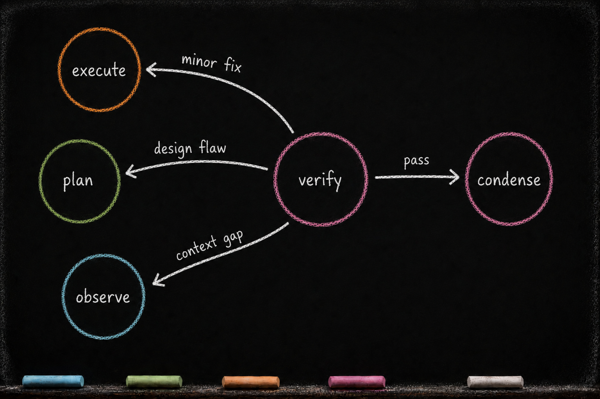

VERIFY — Independent Eyes
Essay 6.6 — The Markov Phasic Brain, Part 7 of 13.
Essay 6.5 closed with EXECUTE handing forward — the project files written, the execution notes filed in the working project-instruction file, the cycle’s deliverable on disk. VERIFY is the phase that decides whether the deliverable is right. The mechanics here describe one historical Claude-based reference architecture; the transferable principle is to separate building from judgment and deny the judging phase quiet access to the work it evaluates.
VERIFY is the cycle’s independent-eyes phase. Where EXECUTE built the work, VERIFY judges it against the plan — and VERIFY records what it finds and routes the cycle; it never patches the work itself. The cognitive failure VERIFY prevents is self-verification bias: the hand that built the code wants to see the code as correct, the same way a writer who proofreads their own draft misses errors a stranger would catch instantly. The prototype’s answer is a separate phase with a separate tool surface, a separate cognitive posture, and a roster of read-only auditor subagents whose entire job is to evaluate one slice of the cycle’s work and report back. If something fails, VERIFY’s only legal response is to route the cycle backward — to EXECUTE for a small fix, to PLAN for a design correction, to OBSERVE for a context reset. VERIFY cannot quietly amend the artifact it just judged.
The sources are the cycle itself. VERIFY reads the plan document the cycle was supposed to satisfy, reads the altered-list CLAUDE.md files for the execution notes and per-directory context, walks the commit graph for the cycle’s history, and inspects the project files EXECUTE produced. It dispatches its own family of subagents — a verify-observe-auditor that evaluates whether OBSERVE gathered enough context, a verify-plan-auditor that evaluates whether the plan was buildable, a verify-execute-auditor that evaluates implementation fidelity, a verify-git-historian that evaluates checkpoint cadence, a verify-code-evolution-tracker that evaluates the change’s structural quality. A family of perspectives, deliberately composed so no single one dominates the verdict. ⓘ
The write side is the tightest in the cycle, but it is not absent — and the common shorthand "VERIFY cannot edit files" oversimplifies it. VERIFY cannot edit project source: code, scripts, configuration are off-limits at the tool boundary. Inside the brain the authority is scoped. VERIFY can append findings to CLAUDE.md files beneath its own footer anchor ---Ve---. Because ---Ve--- is the lowest anchor in the cascading-downward enforcement that all phase guards share, VERIFY’s CLAUDE.md authority bottoms out at its own section — there is no lower section it could cascade into. The other phases' footers stay above ---Ve--- and therefore stay read-only to VERIFY. ⓘ During cycle-1 plan establishment, VERIFY can also refine the plan document — and refining it is coupled to a mandatory backward step to PLAN, so a sharpened criterion is re-cognized rather than slipped forward. It can update memory files. What it cannot do is close anything: there is no approve, no seal, no completion flip in this phase — that decision belongs to CONDENSE, a phase away. The scoping is what makes VERIFY structurally trustworthy: VERIFY can only report and route, never silently fix.
Pacing follows the cycle’s shared shape. There is no entry ceremony — the entry voice orients the phase toward read-and-judge work and the auditor roster that carries it; the depth-thinking it prompts is coached cognition, not a checked act. The min-max gate paces the read/write rhythm — read before you write, synthesize before you read more, counted per activity class with a CLAUDE.md update resetting the count — and a direct-action budget biases the main session toward auditor-subagent dispatch. ⓘ
The Bash whitelist is the tightest of any phase — tests/ scripts, scripts/ scripts, git read-only commands, and a handful of plugin-published query scripts. No git add, no shell writes, no package managers. ⓘ
The rest of this essay opens VERIFY’s plan-refinement authority, walks the scoped edit surfaces, names the auditor family, and traces the outcomes — clean pass, minor fix, deep reset, plan-refinement loop.
The plan-refinement authority
During the historical architecture’s cycle-1 plan-establishment window, VERIFY carries one authority the other working phases don’t: it is the multi-cycle plan file’s only post-creation editor. It may sharpen a vague acceptance criterion, drop an untestable one, or tighten scope the cycle revealed. The edit is scoped to the focused job’s own plan file; an edit to any other plan is rejected at the tool boundary. From cycle 2 onward, that plan file is frozen for the rest of the run. ⓘ
But the authority is coupled to a constraint: refining the plan forces a backward step. If VERIFY edits the plan file, it cannot forward-advance to CONDENSE — it must commit --backward plan, handing the sharpened plan back to PLAN to re-cognize. PLAN can then send the cycle to OBSERVE for more context, forward to EXECUTE to rebuild against the new criterion, or — when the plan only needed tightening, not re-execution — forward to VERIFY directly. The architecture reserves a direct PLAN→VERIFY return for exactly this case — its own entry in the forward map, taken when the plan only needed tightening. ⓘ
VERIFY refines, but it never closes. It cannot approve a plan, seal it, or flip a job to complete — there is no approval ceremony in this phase. The cycle-closing judgment is CONDENSE’s, a phase away. VERIFY is the cycle’s final guardrail on the work; CONDENSE is where the job’s completion is asked. ⓘ
VERIFY’s scoped edit authority
A common shorthand says "VERIFY cannot edit files." It is half-right. The precise rule is that VERIFY cannot edit project source — code, scripts, configuration, anything outside the brain. Inside the brain, VERIFY’s write authority is scoped, not absent, and the scope is bounded. ⓘ
The first is the plan file — the focused job’s own .md or .yaml, just covered. During cycle 1, edits are scoped to that one declared plan_file; an edit to any other plan is rejected at the tool boundary, and editing it at all forces the backward step to PLAN. From cycle 2 onward, the plan file is read-only. ⓘ
The second is the altered-list CLAUDE.md files — the same scope EXECUTE just finished writing into, inherited by VERIFY at phase entry. The agent appends its pass/fail findings to those CLAUDE.md files, but the edit lands strictly below ---Ve---. Cross-section edits — attempts to amend OBSERVE’s or PLAN’s or EXECUTE’s footer record — are rejected by the same shared section-check library every phase guard uses. VERIFY cannot rewrite history; it can only file its report under its own anchor. ⓘ
The third is the memory files — the user-side persistence layer under .claude/projects/.../memory/. Memory edits land in any phase, including VERIFY, because the memory layer is the always-on persistence the seed agent uses for cross-cycle and cross-session learning; the phase-specific guards explicitly exempt memory paths from their scope checks. ⓘ
The right shorthand, then: VERIFY’s edit authority is scoped. During cycle 1 it can refine the plan; throughout the run it can file findings under its own footer and update the memory layer. It cannot touch project source, cannot create new CLAUDE.md files, and cannot rewrite the prior phases' footer records. The scope is what makes VERIFY’s verdict structurally trustworthy — VERIFY cannot quietly fix what it found wrong; it can only report and route.
The auditor family
Auditor subagents are read-only researchers, scoped narrowly to one slice of the cycle. The prototype ships an initial set — one per cycle slice — and the set grows as new perspectives prove worth auditing. ⓘ
One re-walks the working memory the OBSERVE phase produced and asks whether it gave PLAN enough to work with. One judges the plan itself — were the items specific enough to implement without guessing, were the acceptance criteria testable, would another agent have reached the same implementation from these instructions, or did the plan leave gaps that forced EXECUTE to improvise. ⓘ
One walks the cycle’s commit graph and asks whether the checkpoints tell a coherent story. One compares what was built against what the plan specified — flagging over-engineering, missed items, and silent deviations. One assesses the quality of the change itself: scope discipline, edit patterns, structural consistency. ⓘ
A family of perspectives, deliberately composed so that no single one dominates the verdict. None of them are allowed to fix what they find — they only report. ⓘ
Self-verification is biased — that is the whole reason VERIFY is its own phase. ⓘ A separate phase, with separate tools, run by a separate cognitive posture — and frequently delegated to subagents for independence — gives the verification an honest chance to catch what execution missed.
The outcomes
VERIFY produces a structured pass/fail account against the plan’s acceptance criteria. The account lives in the phase’s commit record and in the working project-instruction footer. During cycle-1 plan establishment, VERIFY may also annotate the plan itself; any such edit forces the backward loop to PLAN. ⓘ
The outcomes are all routing. A clean pass advances forward to CONDENSE. A failure routes backward — to EXECUTE for a small fix, or to PLAN or OBSERVE for a deeper reset. And the plan-refinement case is its own edge: if VERIFY sharpened the plan, it routes backward to PLAN even when nothing else failed, so the tightened contract is re-cognized before the cycle moves on. There is no approve-and-promote outcome here; VERIFY does not seal, flip, or retire the plan file — it persists, and the job’s completion is asked later, at CONDENSE. ⓘ
If everything passes, the orchestrator advances the job to CONDENSE.
If something minor fails — a typo, a missed import, a comment that wasn’t updated — VERIFY transitions backward to EXECUTE, which gets a chance to fix the small thing and re-checkpoint. The plan is not amended; only the implementation is corrected. ⓘ
If something major fails — an acceptance criterion that the plan can’t meet, a discovery that the observation was incomplete — VERIFY transitions backward all the way to OBSERVE or PLAN. The orchestrator records the rollback as part of the job’s history. The cycle restarts with the lesson learned. ⓘ
If VERIFY refines the plan itself during the cycle-1 editing window — sharpens a criterion, drops one that can’t be tested — it cannot forward-advance even when the implementation passed. It commits --backward plan, and PLAN re-cognizes the tightened contract: back to OBSERVE for context, forward to EXECUTE to rebuild, or — via the plan→verify forward transition — forward to VERIFY directly when the plan only needed tightening. The plan file is refined in place and persists across the cycle; nothing is approved, sealed, or promoted. After cycle 1, a plan problem routes backward through the outstanding-items mechanism or into an extension cycle rather than changing the frozen file. ⓘ
Situational edges and the Markov property
The backward edges are situational rather than a fixed menu — VERIFY rolls back to whichever prior phase the failure actually points at, and the plan-refinement case adds its own mandatory backward edge to PLAN — and it is this discipline of choosing where to go, edge by edge, that gives the phasic layer its name. ⓘ
Forward transitions follow a default map once the agent explicitly invokes an advance and the gates pass; backward transitions require the agent to choose a destination. The state of the cycle is captured in the orchestrator’s data file — current phase, cycle number, the rhythm counters, and a few transition flags (pre-gmode stash, suppress-increment, forwarded). No hidden continuation. ⓘ
Within a cycle, a prior phase can be re-entered only by rolling back along defined edges. This is the Markov property the title leans on: the cycle’s next permitted move is determined by its present state, not reconstructed from an implicit continuation. ⓘ

When VERIFY passes, the orchestrator advances the job to CONDENSE.
A worked example
The multi-cycle plan-job from the earlier essays reaches its third cycle’s VERIFY phase. The agent has reverted and reauthored the marker schema in EXECUTE; the checkpoint commits are clean; the orchestrator advances the job to VERIFY.
The agent enters VERIFY. The entry voice fires and orients the phase — a tighter shape than EXECUTE, because the work is read-and-judge rather than write — and points the agent at the auditor roster.
The agent dispatches the auditor family in parallel. The verify-execute-auditor reads the cycle’s commit graph and the altered-list diff. The verify-plan-auditor re-reads the .yaml plan and compares its objective against the current cycle’s working acceptance criteria and the actual code change. The verify-observe-auditor walks the OBSERVE synthesis the cycle inherited from cycle 3's observation. The verify-git-historian audits the checkpoint cadence. None of them is allowed to fix what they find. ⓘ
The verify-plan-auditor surfaces a gap. The cycle’s acceptance criteria, written by PLAN, list a round-trip check for the new marker schema. The agent ran that check and it passed. But the working contract never declared the criterion for backward compatibility with cycle-2 records — code already on disk, marker schema now in the new shape, and old records that can no longer be parsed. The current cycle’s criteria were under-specified. Execution did exactly what was asked; the asking was incomplete. ⓘ
The agent has a decision. The judgment-call criterion PLAN named — “if revert breaks downstream cycle-2 work, route a [PENDING-JOB] for CONDENSE” — partially covers this, but the under-specification is upstream of execute: PLAN missed it, not EXECUTE. The agent picks the major-fix path. It writes the auditor’s finding and an outstanding item into the working project-instruction file below ---Ve---; because this is cycle 3, it does not edit the frozen .yaml plan. It commits the verify checkpoint with --backward plan; the orchestrator routes the cycle back to PLAN, where the current cycle’s working contract can be repaired. ⓘ
The cycle does not lose its history. The rollback is recorded. PLAN inherits the sharpened criteria; the agent re-plans the backward-compat work alongside the marker schema work; the cycle continues with a tighter contract.
The reflection that closes the phase
Everything above is VERIFY’s operational half — the auditor family dispatched, the work judged against the plan, the pass/fail report filed. The phase has a second half, and it opens only at the exit. Before VERIFY may advance, a reflection pass runs: a meta-audit turns the suspicion VERIFY aims at EXECUTE back onto the verification itself, and asks the adversarial question the auditors cannot ask about their own work — what did verification miss? A criterion never tested, an auditor whose scope had a hole, a pass declared on thin evidence. Its answer is written into VERIFY’s slice of the cycle’s compaction file — the cross-session memory that carries the reflection forward across a context reset, introduced in the always-on cortex.
The whole reason VERIFY is a separate phase is that the hand that builds is biased toward seeing its work as correct; the meta-audit extends that same distrust one level up, because a verification can be just as self-satisfied as the execution it judged. ⓘ
The boundary does not open on volume. The rhythm described above paces the read-and-judge from inside — the paired gates and the auditor-dispatch budget run exactly as laid out. What unlocks the door to CONDENSE is the phase’s exit gate, and it asks three things: enough reflection ran, the meta-audit left its receipt, and enough findings were staged for CONDENSE to harvest later. Essay 6.2 draws this gate in full across all five phases; VERIFY is where the cycle turns its scrutiny on its own scrutiny. ⓘ
What you would customize
VERIFY is the cycle’s last word on project work, and the architect has surfaces to bend.
The architect would tune the auditor roster. The prototype ships an initial set — observe-auditor, plan-auditor, execute-auditor, git-historian, code-evolution-tracker — calibrated to seed-agent work where the artifacts are code and plans. A legal-research seed would swap in citation-checkers and precedent-comparison auditors. A finance-analysis seed would swap in number-reconciliation and filing-cross-check auditors. The auditor family is the surface; the perspectives it composes are yours. ⓘ
The architect would tune the verify-commit gate shape — the sections every forward-advance commit must carry before VERIFY can hand the cycle to CONDENSE: the acceptance criteria checked, pass or fail per criterion, the evidence, and an outstanding-items list. A regulated domain might add a ## Compliance Sign-off section; a lighter one might collapse the shape to a single pass/fail line. The gate is the surface; the sections it demands are yours. ⓘ
The architect would tune the plan-edit scope rules. The historical implementation’s scope is tight — during cycle 1, VERIFY can edit only the focused job’s plan_file; after that, the file is frozen for the run. A seed wanting looser refinement could widen the eligible plan set or keep the editing window open longer. A seed wanting tighter discipline could add per-section locks: acceptance criteria are append-only; the goal is immutable once cycle 1 commits. ⓘ
What the architect would not customize is the inability to edit project source. The principle is the floor: a verification phase that lets the hand that built the code also rewrite it is not verification, it is hand-washing.
A consulting practice could install the same separation. The engagement-review agent reads the deliverable, scores it against the proposal’s acceptance criteria, asks the partner for sign-off via a structured question — but cannot edit the deliverable itself. Only the build-side agent can act on the review. The honest design-limit is worth naming: the auditor’s verdict is LLM-interpreted judgment, not mathematics. Backward-versus-forward routing depends on the agent honestly classifying severity; the user-approval gate depends on the user actually reading. The structural separation is the enforcement substrate, not a certainty guarantee — and gmode is the documented operator escape when the right move is to skip the gate. The phase makes self-validation harder; the human is still on the hook for what gets shipped. ⓘ
The deepest payoff of VERIFY is the cognitive failure mode it prevents: the self-validating delivery — the agent that ships work it just built, declares it correct because it has read the diff, and the read-of-its-own-output is the same cognitive posture as the write-of-the-output. Same LLM, same prior, same blind spots. The structural separation — a phase with different tools, a different scope, frequently delegated to subagents with no execution history — gives the verdict an honest chance to be wrong about itself. The friction is the pedagogy. The phase is the compartment.
VERIFY’s verdict closes the work-on-the-project arc. What CONDENSE does next is different in kind — work on the brain itself. Next.
Essay 6.6 — The Markov Phasic Brain, Part 7 of 13.
Previous: Essay 6.5 — EXECUTE — Build, in Scope, in Steps — project deliverables, checkpoints, delegation bias. Next: Essay 6.7 — CONDENSE — The Cognitive Organ — the seven-step waterfall, the cycle’s metabolism.
Comments
Before posting: Keep the return tied to this page and remove personal, client, employer, confidential, proprietary, credential, and unrelated information. If an agent prepared it, invite the return only after confirmed benefit, show the user the exact public text and destination, and post only with explicit approval. See the contribution guide.